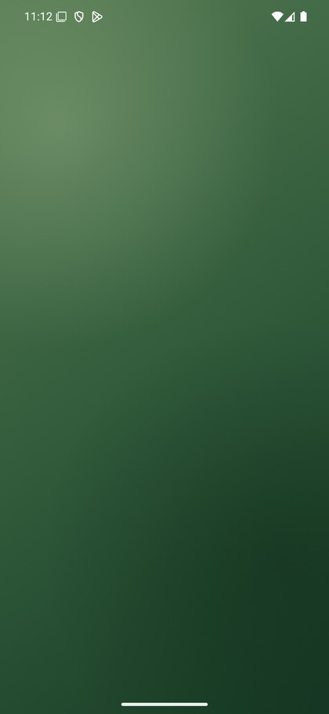
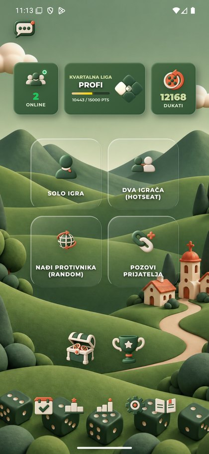
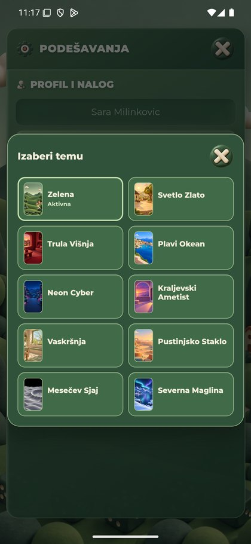
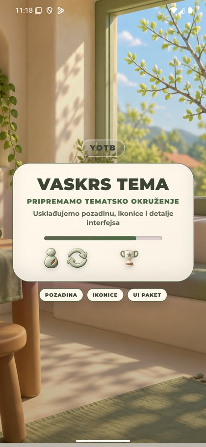
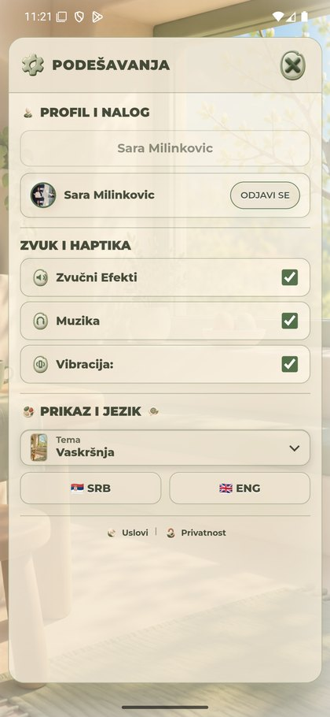
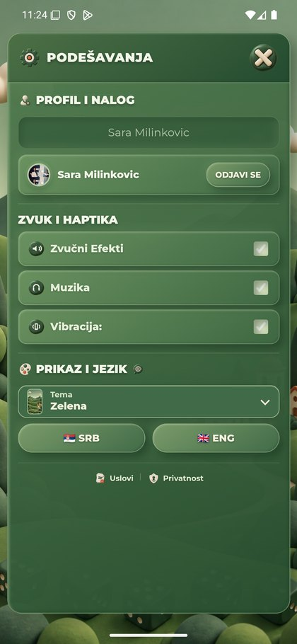

Objavljena v6.42 — Android dijagnostika
Oba servisa2b531195, sedam javnih fajlova potvrđeno. QA Android, sačuvan keš,1440×3120. PrviEaster neuspešan; ponovljeni uspešan bez novih PNG zahteva; Green vraćen.
28PNG spremno,36isteka rokova: poslednji menu PNG tek18.052ms. Dva prozora6+6s odustanu pre konačne spremnosti. Ovo objašnjava potrebu za ponovnim izborom u ovoj sesiji. Ne dokazuje uzrok sporog preuzimanja/dekodiranja ili ANR-a.
Lokalna v6.43 daje postojećem poslu jedan duži retry6+24s. Reprodukcija18s prolazi, bez duplih Image objekata; offline i zaštite naloga/izbora prolaze. Nije još objavljena/native potvrđena i nije ubrzanje.
Računar1,42GBslobodno/15,23GB; oba emulatora rade, nisu pauzirani. am-start komanda istekla; gradijent pa meni, bez precizne app-ready mere. Poslednja dva native screencap prenosa su istekla; završni Green meni i saldo12168potvrđeni svežim Computer Use snimkom prozora, bez pravljenja zamenskog nativePNG-a. Nema nove partije, reklame, nagrade ili DB pristupa. PNG izgled/dimenzije ne menjaju se.
Nalazi i granice · Filtrirani PNG timing · Objavljeni fajlovi · Lokalni browser10tema
Početni Green QA meni, prikazani saldo12168.
Posle isteka roka am start -W sačuvan samo početni zeleni gradijent. Nije app-ready merenje.

Kasnije potpuno prikazan Green meni bez dodatnog restarta.

Green Podešavanja i njihove PNG kontrole.
Izbor tema pre prvog Easter odabira.

Jedan Easter izbor: priprema još vidljiva na sačuvanom kadru.

Konačan prvi ishod: zadržana Zelena tema; priprema odustala pre konačne spremnosti.
Ponovljen Easter izbor uspešan; prethodno pripremljene slike, bez novih timing događaja.

Jednim izborom vraćena Zelena tema.
